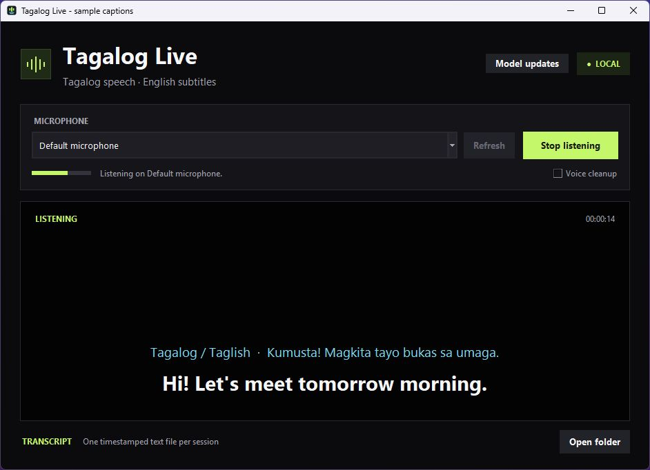
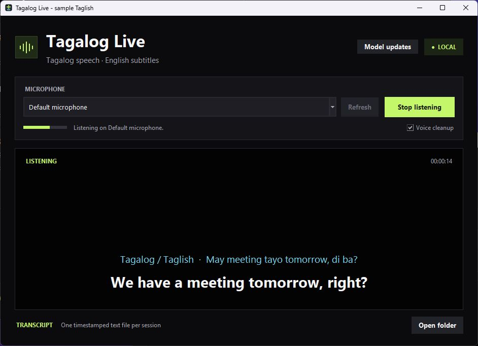

Tagalog / Taglish → English
Tagalog Live
Follow the conversation with live English subtitles.
Use your PC’s microphone to listen to Tagalog or Taglish speech. The app shows what it heard above the English translation and saves both as a timestamped text transcript.
Download for Windows
See both languages
Read the recognized Tagalog or Taglish and its English translation in the same window.
Keep a transcript
Review both lines with timestamps after a session. The app saves text to your PC.
Listen offline
After setup, your PC processes the microphone audio locally. The app keeps no audio recordings.
Get started
- Extract the downloaded ZIP and run the Windows installer inside. The first setup needs an internet connection to download about 4.8 GB of language models. Allow at least 6 GB of free space.
- Open Tagalog Live and choose a microphone. For a phone call, put the phone on speaker near the microphone.
- Select Start listening. Try Voice cleanup in noisy rooms. Captions may take a few seconds to appear.
